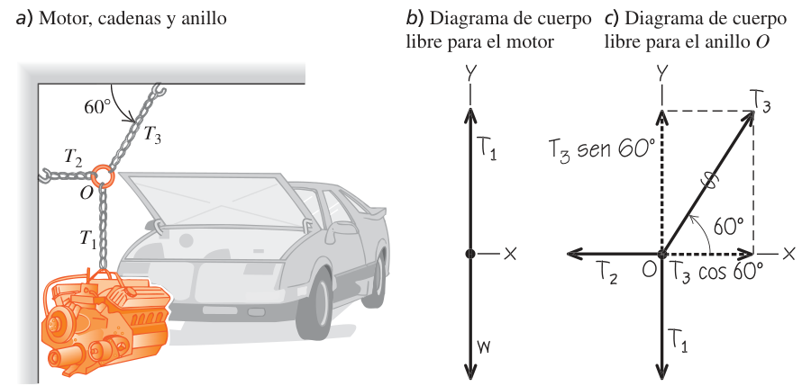
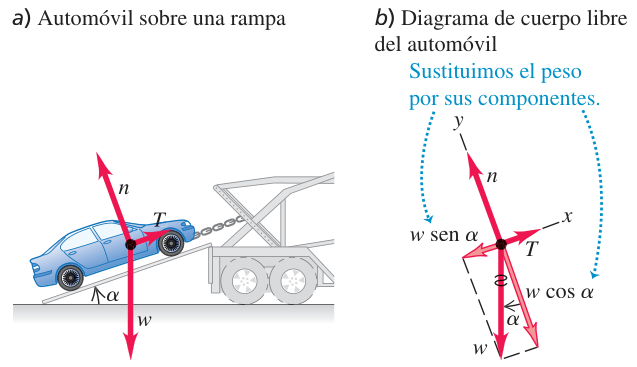
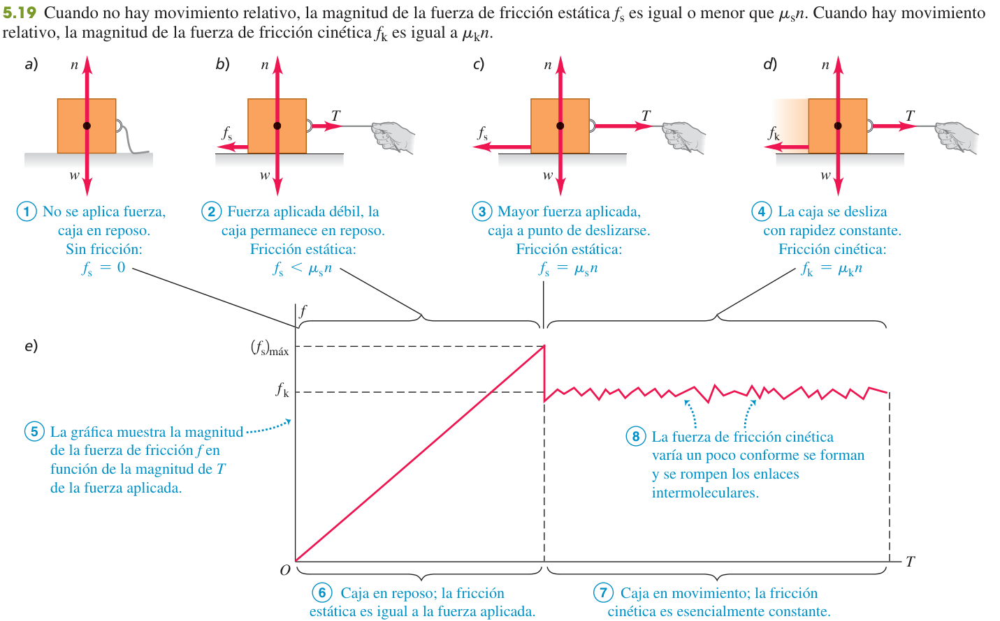
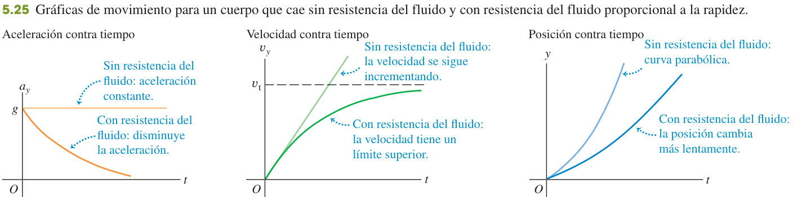
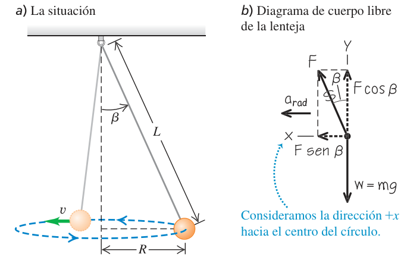
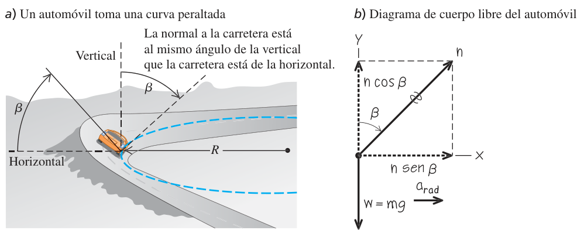
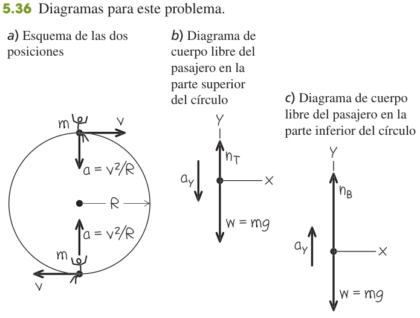

Aplicación de las leyes de Newton
Cómo convertir las tres leyes de Newton en un método fijo para resolver problemas: diagramas de cuerpo libre, planos inclinados, cuerdas y poleas, fricción y movimiento circular. Es el tema donde se resuelven la mayoría de los problemas de dinámica del examen.
0Antes de empezar U p.130
Prerrequisitos: descomponer vectores en componentes (tema 1), las ecuaciones de aceleración constante (tema 2, sobre todo $v_x^2=v_{0x}^2+2a_x(x-x_0)$), la aceleración centrípeta del movimiento circular uniforme $a_{rad}=v^2/R$ (tema 3, §3.4) y las tres leyes de Newton con el diagrama de cuerpo libre (tema 4). Este tema no trae leyes nuevas: enseña a usar $\sum\vec F=m\vec a$ con orden. El único concepto físico nuevo es la fuerza de fricción (sección 5.3; en español también se dice «rozamiento»: es lo mismo, y aquí se usa «fricción» como en U).
Mapa del tema: 5.1 aplica la primera ley (equilibrio, $\sum\vec F=0$): cuerdas, tensión, planos inclinados. 5.2 aplica la segunda ley con aceleración: elevadores (también llamados ascensores), dos cuerpos unidos, planos inclinados. 5.3 añade la fricción (estático, cinético, de rodamiento y resistencia de un fluido). 5.4 estudia el movimiento circular: péndulo cónico, curvas planas y peraltadas, círculo vertical. 5.5 solo nombra las cuatro fuerzas fundamentales de la naturaleza.
Este tema tiene 5 problemas de examen real (los cinco son problemas, ninguna pregunta de teoría): dos bloques unidos sobre planos inclinados de 25° y 60° sin fricción (Feb 2022, 2ª sem.); dos paquetes unidos por un cable en una rampa con fricción (Feb 2025, 2ª sem.); un bloque empujado contra una pared con fuerza oblicua y fricción, que además pide el trabajo (Feb 2023, 2ª sem.; es casi literal el problema 5.75 de U); un plano inclinado con fricción y polea móvil (Feb 2020, 1ª sem.); y un cuerpo sobre un cono giratorio (Feb 2018, 2ª sem., movimiento circular). Están resueltos paso a paso en «Ejercicios resueltos». No existe resumen de Academia_Tec para este tema: las explicaciones se basan en U y en los problemas.
X ×5- Dibuja la situación y elige el cuerpo (uno por vez; si hay varios, repite para cada uno).
- Diagrama de cuerpo libre: solo fuerzas que otros cuerpos ejercen sobre él (peso, normal, tensión, fricción, empujes). Para cada flecha pregúntate «¿qué otro cuerpo la causa?». Nunca dibujes «$m\vec a$» ni «fuerza centrífuga».
- Ejes: uno en la dirección de la aceleración (o del movimiento probable); en un plano inclinado, paralelo y perpendicular a él.
- Descompón cada fuerza en componentes y escribe $\sum F_x=ma_x$, $\sum F_y=ma_y$ (con $a=0$ si hay equilibrio). Nunca mezcles componentes $x$ e $y$ en la misma ecuación.
- Añade las relaciones extra: $f_k=\mu_kn$, ligaduras entre aceleraciones (cuerda inextensible), $a_{rad}=v^2/R$, cinemática.
- Resuelve (tantas ecuaciones como incógnitas) y evalúa: unidades, signo y casos límite.
En U y en el solucionario se usa $g=9{,}80\ \text{m/s}^2$. Los enunciados de examen de 2023 y 2025 dan $g=9{,}81$; los de 2018, 2020 y 2022 no lo indican (aquí se usa 9,80 y se dice cuándo el cambio altera el resultado).
P1Equilibrio de una partícula: primera ley U p.131
Un cuerpo está en equilibrio si no acelera: está parado o se mueve en línea recta con velocidad constante. Una lámpara colgando, una mesa o un avión que vuela recto y nivelado son ejemplos. Como no hay aceleración, las fuerzas «se reparten» de modo que se anulan entre sí, cada eje por separado. Es el problema de dinámica más fácil: sin aceleraciones, solo hay que anular sumas.
La suma de las componentes $x$ de todas las fuerzas es cero y, en una ecuación aparte, la de las componentes $y$. «Velocidad constante» también es equilibrio: un coche que sube una cuesta con rapidez constante cumple $\sum\vec F=0$.
U p.131La tensión en un punto de una cuerda es la magnitud de la fuerza que actúa en ese punto. Una cuerda solo puede tirar de lo que sujeta (nunca empujar), siempre a lo largo de la cuerda. En una cuerda ideal (masa despreciable) la tensión vale lo mismo en todos sus puntos; una polea ideal (sin masa ni fricción) solo cambia la dirección de la cuerda, no su tensión.
Si la cuerda sí tiene peso, la tensión crece hacia arriba: en el ejemplo del libro una gimnasta de 50,0 kg ($w=490$ N) cuelga de una cuerda ideal y la tensión es 490 N en todo su largo; si la cuerda pesa 120 N, vale 490 N abajo y 610 N arriba (el techo sostiene gimnasta más cuerda).
U p.131-132- Dibujo sencillo con medidas y ángulos.
- DCL de cada cuerpo en equilibrio, representado como un punto; el peso $w=mg$ (salvo masa despreciable), la normal perpendicular a la superficie, la fricción paralela a ella, las cuerdas solo tiran.
- Ejes (si el cuerpo está en una superficie, paralelo y perpendicular a ella, aunque esté inclinada) y descompón en componentes cada fuerza que no esté sobre un eje.
- $\sum F_x=0$ y $\sum F_y=0$ (nunca sumes componentes $x$ con componentes $y$). Si hay dos o más cuerpos, repite para cada uno; si interactúan, la 3ª ley relaciona sus fuerzas.
- Mismo número de ecuaciones independientes que de incógnitas; resuelve y evalúa (casos especiales, extremos).
Un motor de peso $w$ cuelga de una cadena vertical unida en un anillo $O$ a otras dos cadenas: una horizontal (pared) y una inclinada 60° (techo). Con solo el motor tenemos una ecuación y una incógnita ($T_1=w$), pero faltan $T_2$ y $T_3$. Truco: tomar también el anillo como cuerpo en equilibrio.
- Motor: $\sum F_y=T_1-w=0\Rightarrow T_1=w$.
- Anillo, vertical: $T_3\sin60^\circ-T_1=0\Rightarrow T_3=\dfrac{w}{\sin60^\circ}=1{,}2\,w$.
- Anillo, horizontal: $T_3\cos60^\circ-T_2=0\Rightarrow T_2=1{,}2\,w\cos60^\circ=0{,}58\,w$.
La cadena inclinada es la más tensa ($1{,}2w>w$): es la que más probablemente se rompe. Un cuerpo en equilibrio solo da dos ecuaciones; para más incógnitas hay que añadir otro cuerpo.
U p.133
Plano inclinado en equilibrio
Sobre una rampa conviene girar los ejes: $x$ a lo largo de la rampa y $y$ perpendicular a ella. Así la normal está sobre un eje, la fricción y el movimiento también, y solo el peso hay que descomponerlo. El peso (vertical) forma con la perpendicular a la rampa el mismo ángulo $\alpha$ que la rampa con la horizontal: una componente $w\sin\alpha$ tira del cuerpo a lo largo de la rampa (cuesta abajo) y otra $w\cos\alpha$ lo aprieta contra la rampa.

Con $x$ cuesta arriba, $y$ perpendicular: $w_x=-w\sin\alpha$, $w_y=-w\cos\alpha$. Equilibrio:
$$\sum F_x=T-w\sin\alpha=0,\qquad \sum F_y=n-w\cos\alpha=0$$ $$\Rightarrow\quad T=w\sin\alpha,\qquad n=w\cos\alpha$$Casos límite (comprobación): rampa horizontal ($\alpha=0$) ⇒ $T=0$, $n=w$; rampa vertical ($\alpha=90^\circ$) ⇒ $T=w$, $n=0$. Truco para no confundir seno y coseno: dibuja $\alpha$ claramente menor que 45°; entonces la componente paralela es la corta ($\sin\alpha$) y la perpendicular la larga ($\cos\alpha$).
U p.134Aquí $n=w\cos\alpha<w$. La normal es lo que haga falta para que el cuerpo no se hunda en la superficie: se obtiene de la ecuación perpendicular a la superficie, y cambia si hay otra fuerza con componente perpendicular (una cuerda que levanta, una mano que empuja contra la pared). Trata $n$ siempre como una incógnita.
U p.134Un carro con un bloque de granito (peso $w_1$) sube por una rampa de 15° unido por un cable que pasa por una polea con una cubeta (peso $w_2$) que cuelga. Con velocidad constante todo está en equilibrio: cubeta $T=w_2$; carro $T=w_1\sin15^\circ$. Igualando: $w_2=w_1\sin15^\circ=0{,}26\,w_1$. Cada cuerpo tiene sus propios ejes (vertical para la cubeta, rampa para el carro).
U p.1342Dinámica de partículas: segunda ley U p.135
Es el mismo trabajo que en equilibrio, con una diferencia: ahora la suma de fuerzas no es cero, es $m\vec a$. La aceleración tiene la dirección de la fuerza neta, así que lo más cómodo es poner un eje en la dirección en que sabes que acelera (hacia abajo por una rampa, hacia el centro de un círculo…); en el otro eje la aceleración vale cero.
Solo cuentan las fuerzas que actúan sobre el cuerpo (no las que él ejerce sobre otros). Estrategia 5.2: (1) dibujo y DCL de cada cuerpo; (2) símbolos para cada fuerza; (3) ejes, uno en la dirección de $\vec a$ si se conoce; (4) relaciones adicionales: cinemática de aceleración constante, y si hay dos cuerpos ligados, la relación entre sus aceleraciones; luego una ecuación por componente de cada cuerpo, resolver y evaluar (¿unidades?, ¿signo?, ¿casos límite?).
U p.135El vector $m\vec a$ es el resultado de las fuerzas, no una fuerza más. Nunca lo dibujes en el DCL (la aceleración puede dibujarse aparte, junto al diagrama y sin tocar el cuerpo). Tampoco metas la «fuerza centrífuga» (ver 5.4).
U p.136Un velero de 200 kg (con tripulante) parte del reposo y alcanza 6,0 m/s en 4,0 s: $a_x=\Delta v/\Delta t=1{,}5\ \text{m/s}^2$. Sin fricción, la única fuerza horizontal es la del viento: $F_W=ma_x=(200)(1{,}5)=300$ N (la normal es $n=mg$, pues no hay aceleración vertical). Si hay una fricción constante de 100 N que se opone al movimiento, para la misma aceleración: $F_W-f=ma_x\Rightarrow F_W=300+100=400$ N.
U p.137Elevadores y peso aparente
Elevador de 800 kg que baja a 10,0 m/s y frena uniformemente en 25,0 m. Con $+y$ hacia arriba: $v_y^2=v_{0y}^2+2a_y(y-y_0)\Rightarrow a_y=\dfrac{0-(-10{,}0)^2}{2(-25{,}0)}=+2{,}00\ \text{m/s}^2$ (hacia arriba, como corresponde a frenar mientras baja). Segunda ley: $T-w=ma_y\Rightarrow T=m(g+a_y)=800(9{,}80+2{,}00)=9440$ N, mayor que el peso (7840 N). Lo mismo ocurriría si subiera acelerando a $2{,}00\ \text{m/s}^2$ hacia arriba: solo cuenta el signo de $a_y$, no si sube o baja.
U p.138Una báscula mide la normal $n$ que el suelo hace sobre ti, no tu peso. Con $+y$ hacia arriba y un elevador con aceleración $a_y$:
$$n=m(g+a_y)$$Si acelera hacia arriba ($a_y>0$) marcas más que tu peso; si acelera hacia abajo ($a_y<0$), menos. En caída libre ($a_y=-g$) $n=0$: sensación de ingravidez (también la de un astronauta en órbita: cae con su nave con la misma aceleración, no «sale de la gravedad»). En el ejemplo 5.9, una mujer de 50,0 kg ($w=490$ N) en el elevador anterior ($a_y=+2{,}00$) marca $n=590$ N; si $a_y=-2{,}00$, marca 390 N.
U p.138-139Igualar la lectura de la báscula con el peso real, o creer que «el elevador sube, luego marca más». Lo que importa es el sentido de la aceleración, no el de la velocidad: un elevador que sube y frena (aceleración hacia abajo) marca menos que tu peso.
PPlano inclinado con aceleración
Con $x$ cuesta abajo (la dirección de la aceleración): $\sum F_x=w\sin\alpha=ma_x$ y $\sum F_y=n-w\cos\alpha=0$. Como $w=mg$:
$$a_x=g\sin\alpha,\qquad n=mg\cos\alpha$$La masa se cancela: cualquier trineo baja con la misma aceleración. Casos límite: $\alpha=0\Rightarrow a_x=0$; $\alpha=90^\circ\Rightarrow a_x=g$ (caída libre). Atención al convenio de signos: aquí $x$ apunta cuesta abajo, así que $w_x=+w\sin\alpha$; en el ejemplo 5.4 apuntaba cuesta arriba y era $w_x=-w\sin\alpha$. Elige el sentido y mantén la coherencia.
U p.139Dos cuerpos unidos
Si dos cuerpos están unidos por una cuerda tensa e inextensible, avanzan lo mismo en el mismo tiempo: sus aceleraciones tienen la misma magnitud (aunque tengan direcciones distintas). Esa es la relación extra que cierra el sistema de ecuaciones. Con cuerda y polea ideales, la tensión es la misma en ambos lados. Se plantea una segunda ley por cada cuerpo, cada uno con su propio eje positivo en el sentido de su aceleración, y se resuelve el sistema.
Una fuerza de 9,0 N empuja una bandeja de 1,00 kg que empuja un envase de 0,50 kg, sin fricción. Dos formas de resolver:
- Por separado: bandeja $F-F_{T\to C}=m_Ta$; envase $F_{T\to C}=m_Ca$. Sumando, $F=(m_T+m_C)a\Rightarrow a=\dfrac{9{,}0}{1{,}50}=6{,}0\ \text{m/s}^2$ y $F_{T\to C}=m_Ca=3{,}0$ N.
- Como cuerpo compuesto: si ambos tienen la misma aceleración, se pueden tratar como un solo cuerpo de 1,50 kg, porque las fuerzas internas (bandeja–envase) se cancelan: $a=F/m=6{,}0\ \text{m/s}^2$. Pero para la fuerza entre ellos hay que volver al envase solo.
Deslizador de masa $m_1$ en un riel horizontal sin fricción, unido por una cuerda ideal que pasa por una polea a una pesa $m_2$ que cuelga. Deslizador: $T=m_1a$ (horizontal; $n=m_1g$). Pesa, con $+y$ hacia abajo: $m_2g-T=m_2a$. Sumando:
$$a=\frac{m_2}{m_1+m_2}\,g,\qquad T=\frac{m_1m_2}{m_1+m_2}\,g$$Comprobación con casos límite: $m_1=0$ ⇒ la pesa cae libremente ($a=g$, $T=0$); $m_2=0$ ⇒ $a=0$, $T=0$. Siempre $a<g$ y $T<m_2g$.
U p.141«Si un cuerpo cuelga de una cuerda, la tensión es su peso» solo es cierto si no acelera (como en el ejemplo 5.5). Aquí $T=\frac{m_1}{m_1+m_2}m_2g<m_2g$ (si $T$ fuera $m_2g$, la pesa estaría en equilibrio y no caería). Trata siempre $T$ como una variable.
U p.1423Fuerzas de fricción U p.142
Empuja una caja muy cargada: al principio no se mueve por más que empujes un poco; hay un momento en que «cede» y arranca; y una vez en marcha cuesta algo menos mantenerla. La superficie ejerce sobre la caja una sola fuerza de contacto cuyas dos componentes son la normal $n$ (perpendicular) y el fricción $f$ (paralela, siempre opuesta al movimiento relativo de las dos superficies, o a la tendencia a moverse). A nivel microscópico ambas vienen de las fuerzas eléctricas entre las moléculas de las dos superficies rugosas donde se tocan.
U p.143$\mu_k$ es el coeficiente de fricción cinética, un número sin unidades que depende del par de superficies (menor cuanto más resbaladizas). La relación es entre magnitudes (no es una ecuación vectorial: $\vec f_k$ y $\vec n$ son perpendiculares). Es una aproximación: se supone que $f_k$ no depende de la rapidez ni del área de contacto.
U p.143La fricción estática vale lo que haga falta para impedir el deslizamiento, desde 0 hasta un máximo $\mu_s n$. Solo en el instante en que el cuerpo está a punto de deslizar se cumple la igualdad. Si el cuerpo está parado y aún no está en el límite, $f_s$ se calcula con el equilibrio ($\sum\vec F=0$), no con $\mu_sn$. Lo habitual es $\mu_k<\mu_s$.
U p.144
| Materiales | $\mu_s$ | $\mu_k$ |
|---|---|---|
| Acero sobre acero | 0,74 | 0,57 |
| Teflón sobre teflón | 0,04 | 0,04 |
| Hule sobre concreto (seco) | 1,0 | 0,8 |
| Hule sobre concreto (húmedo) | 0,30 | 0,25 |
Son valores aproximados; en un problema siempre los da el enunciado.
U p.143Una caja de 500 N sobre un suelo horizontal: se necesita una fuerza de 230 N para arrancarla y 200 N para mantenerla a velocidad constante. Horizontal, justo antes de moverse: $(f_s)_{\text{máx}}=T=230$ N y $n=w=500$ N, luego $\mu_s=230/500=0{,}46$. Ya en movimiento, velocidad constante ⇒ $f_k=T=200$ N, $\mu_k=200/500=0{,}40$ (como se esperaba $\mu_k<\mu_s$). Si con la caja parada solo se tira con 50 N, el equilibrio da $f_s=50$ N, no $\mu_sn=230$ N.
U p.145Usar siempre $f_s=\mu_s n$. Esa es solo la fricción estática máxima; el valor real, con el cuerpo en reposo, se obtiene aplicando $\sum\vec F=0$ y puede ser cualquiera entre 0 y ese máximo. El libro señala que más del 36 % de los estudiantes falla este tipo de pregunta. Y no olvides que, en cuanto el cuerpo desliza, la fricción pasa a ser $\mu_kn$ (menor).
U p.147La normal cambia: tirón oblicuo
La misma caja de 500 N ($\mu_k=0{,}40$), pero ahora se tira de una cuerda que forma 30° con la horizontal, con velocidad constante. La componente vertical de la tensión levanta parcialmente la caja y reduce la normal:
$$\sum F_y=T\sin30^\circ+n-w=0\ \Rightarrow\ n=w-T\sin30^\circ$$ $$\sum F_x=T\cos30^\circ-\mu_kn=0\ \Rightarrow\ T=\frac{\mu_kw}{\cos30^\circ+\mu_k\sin30^\circ}=188\ \text{N}$$Es menos que los 200 N necesarios al tirar en horizontal, y la normal vale $n=406$ N, menor que $w=500$ N.
U p.146Siempre que haya una fuerza oblicua sobre una superficie, primero la ecuación perpendicular a la superficie (da $n$), después $f=\mu n$ y la ecuación paralela. Hacerlo en otro orden es la fuente de la mayoría de los errores con fricción.
PTrineo en una pendiente con fricción
Con $n=mg\cos\alpha$ y $f_k=\mu_kmg\cos\alpha$ (cuesta arriba, porque el trineo baja):
- Velocidad constante (equilibrio): $mg\sin\alpha=\mu_kmg\cos\alpha\Rightarrow\tan\alpha=\mu_k$, es decir $\alpha=\arctan\mu_k$ (no depende del peso).
- Con aceleración (pendiente mayor): $mg\sin\alpha-\mu_kmg\cos\alpha=ma_x\Rightarrow a_x=g(\sin\alpha-\mu_k\cos\alpha)$. Incluye como casos especiales $\mu_k=0$ (ej. 5.10) y $a_x=0$ ($\tan\alpha=\mu_k$). Si el trineo sube, la fricción cambia de sentido y el signo menos pasa a más.
Fricción de rodamiento y resistencia de fluidos
Mover algo sobre ruedas es mucho más fácil que deslizarlo. Se define un coeficiente de rodamiento $\mu_r$ = fuerza horizontal necesaria para velocidad constante dividida entre la normal. Valores típicos: 0,002-0,003 (ruedas de acero sobre rieles de acero) y 0,01-0,02 (caucho sobre concreto); por eso el combustible rinde más en los ferrocarriles que en los camiones.
U p.147Un cuerpo que se mueve dentro de un fluido (aire, aceite…) sufre una fuerza opuesta a su velocidad relativa al fluido y que, a diferencia de la fricción entre sólidos, crece con la rapidez:
$$f=kv\qquad\text{(baja rapidez, objetos pequeños; ec. 5.5)}$$ $$f=Dv^2\qquad\text{(alta rapidez, «arrastre»; ec. 5.6)}$$Al caer, el peso es constante pero la resistencia crece con $v$ hasta igualarlo: entonces $a=0$ y la rapidez deja de aumentar. Esa rapidez final es la rapidez terminal:
$$mg-kv_t=0\ \Rightarrow\ v_t=\frac{mg}{k}\qquad\text{(5.8)}$$ $$mg=Dv_t^2\ \Rightarrow\ v_t=\sqrt{\frac{mg}{D}}\qquad\text{(5.12)}$$Por eso los objetos pesados caen más rápido en el aire que los ligeros del mismo tamaño ($D$ igual, $m$ mayor). En el ejemplo 5.18, un paracaidista de 50 kg con $D=0{,}25\ \text{kg/m}$: $v_t=\sqrt{(50)(9{,}8)/0{,}25}=44$ m/s (≈ 160 km/h). Con $f=kv$ el libro integra la segunda ley y obtiene $v_y=v_t\,[1-e^{-(k/m)t}]$ (ec. 5.9): la rapidez terminal solo se alcanza en el límite $t\to\infty$.
U p.148-150
4Dinámica del movimiento circular U p.150
Un cuerpo que describe un círculo cambia continuamente la dirección de su velocidad, así que está acelerado aunque su rapidez sea constante, y la segunda ley exige que haya una fuerza neta. Esa fuerza apunta siempre hacia el centro del círculo. No es una fuerza nueva con nombre propio («centrípeta»): es simplemente la resultante de las fuerzas reales (tensión, normal, fricción, peso…) en la dirección radial. Si la fuerza deja de actuar, el cuerpo sale despedido en línea recta por la tangente (primera ley), no hacia fuera.
$R$ es el radio del círculo descrito (distancia al eje de giro), $v$ la rapidez y $T_{per}$ el periodo (en el libro se escribe $T$; aquí $T_{per}$ para no confundirlo con la tensión). En este tema «ejes» = un eje radial hacia el centro (ahí $\sum F=mv^2/R$) y otro perpendicular al plano del círculo (ahí $\sum F=0$ si el movimiento es horizontal). La ecuación 5.16 sirve para cualquier arco de circunferencia. Si el enunciado da la velocidad angular $\omega$ (el ángulo que gira el cuerpo por unidad de tiempo, $\omega=2\pi/T_{per}$, en rad/s; se estudia a fondo en el tema 9): $v=\omega R$, $a_{rad}=\omega^2R$; recuerda pasar rpm a rad/s (×$2\pi/60$).
U p.150-151No dibujes una fuerza $mv^2/R$ hacia fuera en el DCL. El libro da tres razones: el cuerpo no «se va hacia fuera» sino que sigue un círculo (está acelerado, no en equilibrio); si hubiera una fuerza hacia fuera que equilibrase la de dentro, no habría fuerza neta y el cuerpo iría en línea recta; y $mv^2/R$ no es una fuerza, es el término $m\vec a$ de la ecuación. En un sistema inercial no existe tal fuerza. (El pasajero que «se va hacia fuera» en una curva en realidad sigue recto, y es la puerta la que lo empuja.)
U p.151Trineo de 25,0 kg atado con una cuerda de 5,00 m, da 5 vueltas por minuto sobre hielo sin fricción. Periodo $T_{per}=60{,}0/5=12{,}0$ s; $a_{rad}=\dfrac{4\pi^2R}{T_{per}^2}=\dfrac{4\pi^2(5{,}00)}{12{,}0^2}=1{,}37\ \text{m/s}^2$. La única fuerza horizontal es la tensión: $F=ma_{rad}=(25{,}0)(1{,}37)=34{,}3$ N. Si $v$ se duplica con $R$ igual, $F$ se hace 4 veces mayor.
U p.151Péndulo cónico
La lenteja describe un círculo horizontal con el alambre formando un ángulo $\beta$ con la vertical. El centro del círculo está en el plano horizontal de la lenteja, no en el punto de suspensión, y el radio es $R=L\sin\beta$. Dos fuerzas: peso y tensión $F$. Con $x$ horizontal hacia el centro:
$$\sum F_x=F\sin\beta=ma_{rad},\qquad \sum F_y=F\cos\beta-mg=0$$ $$\Rightarrow\quad F=\frac{mg}{\cos\beta},\qquad a_{rad}=g\tan\beta$$ $$T_{per}=2\pi\sqrt{\frac{R}{g\tan\beta}}=2\pi\sqrt{\frac{L\cos\beta}{g}}$$Al crecer $\beta$ el periodo disminuye y la tensión aumenta; $\beta=90^\circ$ es imposible (haría falta $F=\infty$). Fíjate en que la masa se cancela: $\tan\beta=v^2/(gR)$ no depende de $m$.
U p.152
Curva plana y curva peraltada
En una curva sin peralte, la única fuerza horizontal sobre el coche es la fricción estático con la carretera (el neumático no desliza), dirigido al centro: $f=mv^2/R$ y $n=mg$. Como $f\le\mu_sn=\mu_smg$, la rapidez máxima sin derrapar es
$$v_{\text{máx}}=\sqrt{\mu_s\,g\,R}$$Con $\mu_s=0{,}96$ y $R=230$ m, $v_{\text{máx}}=47$ m/s (≈ 170 km/h). Con la carretera mojada o con hielo $\mu_s$ baja y $v_{\text{máx}}$ también.
U p.152Si la calzada está inclinada un ángulo $\beta$ hacia el interior, la normal (perpendicular a la calzada) tiene una componente horizontal $n\sin\beta$ hacia el centro que sustituye a la fricción. Ejes: $x$ horizontal hacia el centro, $y$ vertical (¡no paralelos a la calzada!):
$$n\sin\beta=m\frac{v^2}{R},\quad n\cos\beta=mg\ \Rightarrow\ \tan\beta=\frac{v^2}{gR},\quad n=\frac{mg}{\cos\beta}$$Para $R=230$ m y $v=25$ m/s: $\beta=\arctan\frac{25^2}{(9{,}8)(230)}=15^\circ$. El ángulo depende de la rapidez y del radio, no de la masa. El mismo resultado vale para un avión que vira inclinado un ángulo $\beta$ (la sustentación $L$ hace el papel de $n$) y explica por qué un piloto en un viraje cerrado soporta un «peso aparente» $n=mg/\cos\beta$ (≈ 5,8 mg para $\beta=80^\circ$).
U p.153-154
Círculo vertical
Pasajero de masa $m$ en un círculo vertical de radio $R$ con rapidez constante $v$. Solo hay fuerzas verticales (normal $n$ del asiento y peso). En ambas posiciones la aceleración apunta al centro: hacia abajo arriba, hacia arriba abajo. Con $+y$ hacia arriba:
$$\text{arriba: } n_T-mg=-m\frac{v^2}{R}\ \Rightarrow\ n_T=mg\Bigl(1-\frac{v^2}{gR}\Bigr)$$ $$\text{abajo: } n_B-mg=+m\frac{v^2}{R}\ \Rightarrow\ n_B=mg\Bigl(1+\frac{v^2}{gR}\Bigr)$$Arriba el asiento empuja menos que el peso (peso aparente menor); si $v^2=gR$ el asiento no ejerce fuerza y el pasajero está a punto de salir despedido; con más rapidez haría falta un cinturón. Abajo siempre empuja más que el peso. Si el cuerpo no mantiene la rapidez (una pelota atada a una cuerda en un círculo vertical), el movimiento es circular no uniforme, la fuerza neta tiene también componente tangencial y las rapideces en distintos puntos se relacionan con energía (cap. 7).
U p.154-155
5Fuerzas fundamentales de la naturaleza U p.155
Todas las fuerzas que aparecen en los problemas son manifestaciones de solo cuatro interacciones fundamentales: la gravitatoria (incluye el peso y mantiene unidos planetas y estrellas), la electromagnética (fuerzas eléctricas y magnéticas; de ella provienen todas las fuerzas de contacto: normal, fricción, resistencia de fluidos, tensión…), la fuerte (mantiene unidos protones y neutrones en el núcleo) y la débil (relacionada con ciertas desintegraciones radiactivas). A escala atómica la gravedad no cuenta: la repulsión eléctrica entre dos protones es unas $10^{35}$ veces mayor que su atracción gravitatoria. Esta sección es solo descriptiva; no hay ecuaciones que memorizar.
U p.155-1566Ejercicios resueltos
Primero los cinco problemas de examen real de este tema, ordenados de más sencillo a más difícil; después nueve problemas del solucionario (E), también de sencillo a elaborado. Cada uno termina con una receta reutilizable y, si procede, el error típico. Intenta resolver tú antes de abrir la solución.
X1 — Dos bloques en planos de 25° y 60° (sin fricción) X
Dos bloques de masas $m_1=80$ kg y $m_2=20$ kg, unidos por una cuerda que pasa por una polea sin fricción, descansan en los dos planos inclinados de una cuña (25° con la horizontal el de $m_1$, 60° el de $m_2$). a) Indicar hacia dónde se moverá el sistema. b) Calcular la aceleración del sistema. c) Calcular la tensión de la cuerda. No hay fricción entre los bloques y las superficies. (3 puntos.)
- ¿Hacia dónde? Sin fricción, a lo largo de cada plano compiten solo las componentes del peso (la tensión es igual en los dos lados y las normales son perpendiculares a los planos). Comparamos: $m_1g\sin25^\circ=80(9{,}80)(0{,}4226)=331{,}3$ N frente a $m_2g\sin60^\circ=20(9{,}80)(0{,}8660)=169{,}7$ N. Gana $m_1$: $m_1$ baja por su plano y $m_2$ sube por el suyo (aunque el plano de $m_2$ sea más empinado, su masa es cuatro veces menor).
- Ejes y signos coherentes. Como la cuerda es inextensible, los dos bloques tienen aceleraciones de la misma magnitud $a$ (ver ejemplo 5.12). Para cada bloque tomamos $x$ paralelo a su plano y positivo en el sentido de su movimiento: bloque 1, cuesta abajo; bloque 2, cuesta arriba.
- Segunda ley a lo largo de cada plano: $m_1g\sin25^\circ-T=m_1a$ y $T-m_2g\sin60^\circ=m_2a$. (Perpendicularmente $n_i=m_ig\cos\alpha_i$: no hace falta, no hay fricción.)
- (b) Sumando las dos ecuaciones se cancela $T$: $$a=\frac{m_1\sin25^\circ-m_2\sin60^\circ}{m_1+m_2}\,g=\frac{331{,}3-169{,}7}{100}=\mathbf{1{,}62\ m/s^2}.$$
- (c) Tensión (de la ecuación del bloque 2): $T=m_2(a+g\sin60^\circ)=20(1{,}616+8{,}487)=\mathbf{202\ N}$. Comprobación con el bloque 1: $m_1(g\sin25^\circ-a)=80(4{,}142-1{,}616)=202$ N ✓.
Resultado: $m_1$ desciende; $a=1{,}62\ \text{m/s}^2$; $T=202$ N (con $g=9{,}81$: $1{,}618\ \text{m/s}^2$ y $202{,}3$ N).
X2 — Dos paquetes unidos por un cable en una rampa con fricción X
Dos paquetes unidos por un cable sometido a tensión se deslizan por una rampa de $\alpha=16^\circ$ debido a la gravedad. El paquete que va en primer lugar tiene una masa $m_1=5{,}5$ kg y un coeficiente de fricción cinética $\mu_1=0{,}2$. El que va en segundo lugar tiene $m_2=8{,}5$ kg y $\mu_2=0{,}25$. (a) Calcule la aceleración de cada paquete. (b) Determine la tensión en el cable. (c) ¿Qué sucedería si se invierten las posiciones de los paquetes de manera que el de 8,5 kg desciende en primer lugar? Considere $g=9{,}81\ \text{m/s}^2$. (3 puntos.)
- ¿Está tenso el cable? Un cable solo tira. Calculamos cuánto aceleraría cada paquete suelto (ejemplo 5.17): $a=g(\sin\alpha-\mu_k\cos\alpha)$. Paquete 1: $9{,}81(0{,}2756-0{,}2\cdot0{,}9613)=0{,}818\ \text{m/s}^2$. Paquete 2: $9{,}81(0{,}2756-0{,}25\cdot0{,}9613)=0{,}347\ \text{m/s}^2$. El de delante acelera más que el de atrás: se separaría, luego el cable se tensa y los dos se mueven juntos con la misma $a$.
- Ejes ($x$ rampa abajo, $y$ perpendicular) y normales: $n_i=m_ig\cos\alpha$ (no hay aceleración perpendicular), de modo que $f_{k1}=\mu_1n_1=10{,}37$ N y $f_{k2}=\mu_2n_2=20{,}04$ N, ambas rampa arriba.
- Segunda ley a lo largo de la rampa (misma $a$; $T$ tira hacia atrás del paquete 1 y hacia delante del 2): $m_1g\sin\alpha-f_{k1}-T=m_1a$ y $m_2g\sin\alpha-f_{k2}+T=m_2a$.
- (a) Sumando se cancela $T$: $$a=g\sin\alpha-\frac{(\mu_1m_1+\mu_2m_2)\,g\cos\alpha}{m_1+m_2}=\mathbf{0{,}532\ m/s^2}$$ para los dos, rampa abajo.
- (b) Del paquete 1: $T=m_1[g(\sin\alpha-\mu_1\cos\alpha)-a]=5{,}5(0{,}818-0{,}532)=\mathbf{1{,}57\ N}$. Forma compacta: $T=\dfrac{m_1m_2\,g\cos\alpha\,(\mu_2-\mu_1)}{m_1+m_2}$, positiva porque $\mu_2>\mu_1$.
- (c) Posiciones invertidas (el de 8,5 kg, con $\mu=0{,}25$, delante). Las mismas ecuaciones darían $T=-1{,}57$ N: imposible para un cable. Físicamente, sueltos, el de delante (8,5 kg) acelera $0{,}347\ \text{m/s}^2$ y el de detrás (5,5 kg) $0{,}818\ \text{m/s}^2$: el de detrás se acerca. El cable queda flojo ($T=0$) y cada paquete baja con su propia aceleración hasta que el de 5,5 kg alcanza y choca con el de 8,5 kg; a partir de ahí, si siguen en contacto, el de detrás empuja al de delante (fuerza de contacto de 1,57 N) y bajan juntos con $0{,}532\ \text{m/s}^2$. (Deslizan en todos los casos, porque $\tan16^\circ=0{,}287>0{,}25$.)
Resultado: (a) $0{,}532\ \text{m/s}^2$ ambos; (b) $T=1{,}57$ N; (c) cable flojo, $0{,}347$ y $0{,}818\ \text{m/s}^2$ hasta el choque, luego juntos con $0{,}532\ \text{m/s}^2$.
X3 — Bloque empujado contra una pared (fuerza oblicua, fricción y trabajo) X
Se coloca un bloque de 5 kg contra una pared vertical. Se aplica una fuerza constante $F$ al bloque, con $F=96{,}0$ N y un ángulo de 60,0° con la horizontal. El coeficiente de fricción cinética entre el bloque y la pared es 0,300. Si el bloque está inicialmente en reposo: (a) ¿Cuál será el módulo de su velocidad después de recorrer 0,400 m sobre la pared? (b) ¿Cuál será el trabajo realizado en el desplazamiento? Considere $g=9{,}81\ \text{m/s}^2$. (3 puntos.)
Este examen es casi literal el problema 5.75 de U; el examen usa $g=9{,}81$ (el solucionario, que usa 9,80, da $a=3{,}948\ \text{m/s}^2$ y $v=1{,}78$ m/s).
U p.166 E- Eje horizontal ($+x$ alejándose de la pared; no hay movimiento horizontal, $a_x=0$): $n-F\cos60^\circ=0\Rightarrow n=48{,}0$ N. La normal aquí no es $mg$: la pone la componente horizontal de $F$. En una pared vertical el peso es paralelo a la superficie y no la aprieta.
- ¿Hacia dónde se mueve? (hace falta para orientar $f_k$). $F\sin60^\circ=83{,}1$ N es mayor que $mg=49{,}05$ N y que $mg+f_k=63{,}5$ N, luego el bloque sube y la fricción cinética apunta hacia abajo.
- Fricción: $f_k=\mu_kn=0{,}300(48{,}0)=14{,}4$ N.
- Eje vertical ($+y$ hacia arriba): $F\sin60^\circ-mg-f_k=ma\Rightarrow a=\dfrac{83{,}14-49{,}05-14{,}40}{5}=\mathbf{3{,}94\ m/s^2}$ hacia arriba.
- (a) Cinemática con $a$ constante desde el reposo: $v^2=2ad\Rightarrow v=\sqrt{2(3{,}938)(0{,}400)}=\mathbf{1{,}77\ m/s}$.
- (b) Trabajo (adelanto del tema 6: $W=Fs\cos\phi$, U ec. 6.2 p. 174). El enunciado no dice «de qué fuerza»; conviene dar las dos cosas. Solo trabaja la parte de cada fuerza paralela al desplazamiento (vertical):
• $W_F=F\sin60^\circ\,d=83{,}14(0{,}400)=\mathbf{33{,}3\ J}$ (la componente horizontal es perpendicular al desplazamiento: trabajo 0).
• $W_{peso}=-mgd=-19{,}6$ J; $W_{f}=-f_kd=-5{,}76$ J; $W_n=0$.
• Trabajo total $=33{,}26-19{,}62-5{,}76=\mathbf{7{,}88\ J}=\tfrac12mv^2$ ✓ (comprueba el apartado (a) por energía).
Resultado: $a=3{,}94\ \text{m/s}^2$ (hacia arriba); $v=1{,}77$ m/s; $W_F=33{,}3$ J; trabajo total $7{,}88$ J.
X4 — Plano inclinado con fricción y polea móvil X
Sea el sistema de poleas de la figura, en el que tanto las poleas como las cuerdas se pueden considerar de masa despreciable. Sabiendo que el coeficiente de fricción dinámico y estático entre la masa A y la superficie inclinada es el mismo y vale 0,1, determinar: a) la aceleración de las masas A, de 1,5 kg, y B, de 1 kg; b) la tensión en las cuerdas; c) la velocidad de A después de haber recorrido un metro sobre el plano inclinado, suponiendo que el sistema parte del reposo. (3 puntos.)
La figura del examen (plano inclinado de 30°): A sobre el plano; la cuerda sube paralela al plano hasta una polea fija en el vértice, baja vertical, rodea por debajo una polea móvil de la que cuelga B, y sube hasta un soporte fijo en el techo. g no está indicada: se usa 9,80.
- Ligadura de la polea móvil. La longitud de cuerda es constante. Si A recorre una distancia $s$ por el plano, esa longitud se reparte entre los dos tramos que sostienen la polea móvil, de modo que ésta (y B) se mueve $s/2$: $s_B=s_A/2\Rightarrow a_B=a_A/2$. Además cada tramo tira de la polea con $T$, así que sobre la polea y B actúa $2T$. (Explicación propia de la ligadura; la idea de cuerda inextensible es la de U Ej. 5.12 p. 141.)
- ¿Hacia dónde se mueve? (hay que saberlo antes de orientar la fricción). Para sostener B en reposo bastaría $T=m_Bg/2=4{,}90$ N. La componente del peso de A a lo largo del plano es $m_Ag\sin30^\circ=7{,}35$ N y la fricción estática máxima es $\mu_sm_Ag\cos30^\circ=1{,}27$ N (ec. 5.4). Como $7{,}35>4{,}90+1{,}27=6{,}17$ N, A baja por el plano y B sube. ¡Contraintuitivo!: la polea móvil «multiplica por dos» la fuerza del lado de A.
- Segunda ley. A ($x$ plano abajo; la fricción cinética apunta plano arriba): $m_Ag\sin30^\circ-\mu\,m_Ag\cos30^\circ-T=m_Aa_A$. Polea móvil y B ($+y$ hacia arriba): $2T-m_Bg=m_Ba_B=m_B\,a_A/2$.
- (a) Resolver (de la segunda, $T=\tfrac12m_B(g+a_A/2)$, y se sustituye en la primera): $$a_A=\frac{g\,[\,2m_A(\sin30^\circ-\mu\cos30^\circ)-m_B\,]}{2m_A+m_B/2}=\frac{9{,}80\,(1{,}2402-1)}{3{,}5}$$ es decir $a_A=\mathbf{0{,}673\ m/s^2}$ (plano abajo), y $a_B=a_A/2=\mathbf{0{,}336\ m/s^2}$ (hacia arriba).
- (b) Tensiones: en la cuerda principal (A–polea fija–polea móvil–techo), $T=m_A[g(\sin30^\circ-\mu\cos30^\circ)-a_A]=1{,}5(4{,}051-0{,}673)=\mathbf{5{,}07\ N}$; el tirante entre la polea móvil y B soporta $2T=\mathbf{10{,}1\ N}$ (la polea no tiene masa).
- (c) Con $a_A$ constante desde el reposo: $v_A=\sqrt{2a_A(1\ \text{m})}=\mathbf{1{,}16\ m/s}$.
Resultado: $a_A=0{,}673\ \text{m/s}^2$ (baja), $a_B=0{,}336\ \text{m/s}^2$ (sube); $T=5{,}07$ N y $10{,}1$ N en el tirante de B; $v_A=1{,}16$ m/s. (Con $g=9{,}81$: $0{,}673$; $0{,}337$; $5{,}07$ N; $1{,}16$ m/s.)
X5 — Cuerpo sobre un cono giratorio (movimiento circular) X
Sobre la superficie exterior lisa y sin fricción de un cono de revolución, que gira alrededor de su propio eje con una velocidad angular de 15 r.p.m., está situado un cuerpo A de 2 kg sujeto al vértice del cono por un hilo inextensible y sin masa de 4 m de longitud. Calcular: a) velocidad lineal del cuerpo A respecto a la Tierra; b) reacción de la superficie del cono sobre A; c) tensión del hilo; d) velocidad angular a que debe girar el cono para anular su fuerza de reacción sobre A. (3 puntos.)
La figura del examen: cono de eje vertical y vértice arriba; el ángulo de 30° está entre el eje y la generatriz (semiángulo del cono). g no indicada: 9,80.
- Radio de giro (geometría): A describe un círculo horizontal, así que su radio es la proyección horizontal del hilo: $r=L\sin30^\circ=4(0{,}5)=2{,}00$ m. No es $L$. Además $\omega=15\ \text{rpm}=15\cdot\frac{2\pi}{60}=\frac{\pi}{2}=1{,}571$ rad/s.
- (a) Periodo $T_{per}=60/15=4{,}00$ s, luego $v=\dfrac{2\pi r}{T_{per}}=\dfrac{2\pi(2{,}00)}{4{,}00}=\mathbf{3{,}14\ m/s}$ (ec. 5.14) y $a_{rad}=\dfrac{4\pi^2r}{T_{per}^2}=4{,}93\ \text{m/s}^2$ (ec. 5.15). (Es lo mismo que $v=\omega r$ y $a_{rad}=\omega^2r$; la relación con $\omega$ se verá en el tema 9.)
- DCL y ejes. Peso $mg$ (abajo); tensión $T$ a lo largo del hilo hacia el vértice (componentes $T\sin30^\circ$ hacia el eje y $T\cos30^\circ$ hacia arriba); normal $n$ perpendicular a la generatriz, hacia fuera (componentes $n\cos30^\circ$ alejándose del eje y $n\sin30^\circ$ hacia arriba). Ejes: $x$ horizontal hacia el eje (la aceleración centrípeta va ahí) e $y$ vertical.
- Segunda ley (ec. 5.16 en $x$, equilibrio en $y$): $T\sin30^\circ-n\cos30^\circ=m\omega^2r$ y $T\cos30^\circ+n\sin30^\circ-mg=0$.
- Resolver (multiplica la primera por $\sin30^\circ$ y la segunda por $\cos30^\circ$ y suma; después al revés y resta): $T=mg\cos30^\circ+m\omega^2r\sin30^\circ$, $\ n=mg\sin30^\circ-m\omega^2r\cos30^\circ$.
• (b) $n=9{,}80-9{,}87(0{,}866)=\mathbf{1{,}25\ N}$, perpendicular a la superficie y hacia fuera. Es positiva ⇒ el cuerpo sigue apoyado (comprobación obligada).
• (c) $T=16{,}97+4{,}93=\mathbf{21{,}9\ N}$. - (d) $n=0$: A deja de apretar el cono y es un péndulo cónico (ejemplo 5.20): $T\sin\beta=m\omega^2r$ y $T\cos\beta=mg$, con $\beta=30^\circ$ (ángulo del hilo con la vertical). Dividiendo, $\omega^2=\dfrac{g\tan\beta}{r}=\dfrac{g}{L\cos\beta}\Rightarrow\omega_0=\mathbf{1{,}68\ rad/s}\approx\mathbf{16{,}1\ rpm}$. Para giros mayores A se separa de la superficie y el ángulo del hilo crece.
Resultado: $v=3{,}14$ m/s; $n=1{,}25$ N (con $g=9{,}81$: $1{,}26$ N); $T=21{,}9$ N; $\omega_0=1{,}68$ rad/s ≈ 16,1 rpm.
Problemas del solucionario (E)
E1 — Problema 5.6: bola de demolición con dos cables (equilibrio) E
Una bola de demolición de 3620 kg está sujeta por dos cables ligeros de acero. El cable B forma 40° con la vertical y el cable A es horizontal. Calcule a) la tensión $T_B$ y b) la tensión $T_A$.
- La bola no acelera: equilibrio (ec. 5.1). Eje vertical primero, porque solo $T_B$ tiene componente vertical (una incógnita): $T_B\cos40^\circ=mg\Rightarrow T_B=\dfrac{3620(9{,}80)}{\cos40^\circ}=\mathbf{4{,}63\times10^4\ N}$.
- Eje horizontal: $T_A=T_B\sin40^\circ=mg\tan40^\circ=\mathbf{2{,}98\times10^4\ N}$.
E2 — Problema 5.8: coche sostenido por un cable en una rampa lisa E
En una rampa sin fricción que sube 25,0° sobre la horizontal, un coche de 1130 kg se mantiene en reposo con un cable ligero que forma 31,0° por encima de la superficie de la rampa. a) Dibuje el DCL. b) ¿Qué tensión tiene el cable? c) ¿Con qué fuerza empuja la rampa al coche?
- Ejes inclinados ($x$ rampa arriba, $y$ perpendicular): así la normal solo está en $y$ y el peso es la única fuerza que hay que descomponer ($-w\sin25^\circ$ en $x$, $-w\cos25^\circ$ en $y$); el cable tiene $T\cos31^\circ$ en $x$ y $T\sin31^\circ$ en $y$.
- $x$: $T\cos31^\circ-w\sin25^\circ=0\Rightarrow T=\dfrac{1130(9{,}80)\sin25^\circ}{\cos31^\circ}=\mathbf{5460\ N}$.
- $y$: $n+T\sin31^\circ-w\cos25^\circ=0\Rightarrow n=10\,036-2812=\mathbf{7220\ N}$, menor que $w\cos25^\circ$ porque el cable «levanta» parte del coche.
E3 — Problema 5.15: máquina de Atwood E
Una carga de ladrillos de 15,0 kg cuelga de un extremo de una cuerda que pasa por una polea pequeña sin fricción; en el otro extremo hay un contrapeso de 28,0 kg. Se suelta desde el reposo. a) DCL de cada cuerpo. b) Aceleración (hacia arriba) de los ladrillos. c) Tensión de la cuerda; compárela con el peso de ladrillos y contrapeso.
- Cuerda y polea ideales: misma $T$ en los dos extremos; cuerda inextensible: misma magnitud de aceleración $a$ (ejemplo 5.12). Para cada cuerpo, $+y$ en el sentido de su aceleración (ladrillos arriba, contrapeso abajo).
- Ladrillos: $T-m_1g=m_1a$. Contrapeso: $m_2g-T=m_2a$.
- Sumando: $a=\dfrac{m_2-m_1}{m_1+m_2}\,g=\dfrac{13{,}0}{43{,}0}(9{,}80)=\mathbf{2{,}96\ m/s^2}$.
- $T=m_1(g+a)=15{,}0(12{,}76)=\mathbf{191\ N}$; comprobación con el otro: $m_2(g-a)=28{,}0(6{,}84)=191$ N ✓. Comparación: $T=1{,}30\,w_1$ (mayor que el peso de los ladrillos, que suben) y $T=0{,}698\,w_2$ (menor que el del contrapeso, que baja).
E4 — Problema 5.20: peso aparente en un elevador E
Un estudiante de 550 N está de pie sobre una báscula de baño dentro de un elevador de 850 kg (incluido el estudiante) sostenido por un cable. Al arrancar, la báscula marca 450 N. a) Halle la aceleración del elevador (módulo y sentido). b) ¿Y si la báscula marca 670 N? c) Si marca 0, ¿debería preocuparse? d) ¿Qué tensión hay en el cable en los casos a) y c)?
- La báscula mide la normal $n$, no el peso (ejemplo 5.9). Masa del estudiante: $m=550/9{,}80=56{,}1$ kg.
- a) $n-mg=ma\Rightarrow a=\dfrac{450-550}{56{,}1}=\mathbf{-1{,}78\ m/s^2}$: hacia abajo (baja acelerando o sube frenando).
- b) $a=\dfrac{670-550}{56{,}1}=\mathbf{+2{,}14\ m/s^2}$ (hacia arriba).
- c) $n=0\Rightarrow a=-g$: caída libre. Sí, hay motivo para preocuparse (el cable se ha roto o está suelto).
- d) Sistema completo (850 kg): $T-m_{tot}g=m_{tot}a\Rightarrow T=m_{tot}(g+a)$. En a): $850(9{,}80-1{,}78)=\mathbf{6{,}82\times10^3\ N}$. En c): $\mathbf{T=0}$. (En b) sería $1{,}01\times10^4$ N; el peso total es 8330 N.)
E5 — Problema 5.31: caja empujada en una rampa con fricción E
Una caja de 10,0 kg se mueve sobre una rampa inclinada 55,0° con $\mu_k=0{,}300$. Calcule su aceleración si se la empuja con una fuerza constante $F=120{,}0$ N paralela a la rampa: a) hacia abajo (la caja baja); b) hacia arriba (la caja sube).
- Perpendicular a la rampa (no hay aceleración): $n=mg\cos55^\circ=56{,}2$ N, luego $f_k=\mu_kn=\mathbf{16{,}9\ N}$, igual en los dos casos (ec. 5.3). Componente del peso a lo largo de la rampa: $mg\sin55^\circ=80{,}3$ N.
- a) $+x$ rampa abajo (la fricción apunta rampa arriba): $F+mg\sin55^\circ-f_k=ma\Rightarrow a=\dfrac{120+80{,}3-16{,}9}{10{,}0}=\mathbf{18{,}3\ m/s^2}$.
- b) $+x$ rampa arriba (la fricción apunta rampa abajo): $F-mg\sin55^\circ-f_k=ma\Rightarrow a=\dfrac{120-80{,}3-16{,}9}{10{,}0}=\mathbf{2{,}29\ m/s^2}$.
E6 — Problema 5.36: ángulo de deslizamiento (umbral de la fricción estática) E
Una caja de 25,0 kg con libros descansa sobre una rampa que forma un ángulo $\alpha$ con la horizontal; $\mu_k=0{,}25$ y $\mu_s=0{,}35$. a) Al aumentar $\alpha$, ¿con qué ángulo mínimo empieza la caja a resbalar? b) Con ese ángulo, ¿qué aceleración tiene una vez en movimiento? c) ¿Con qué rapidez se mueve tras deslizar 5,0 m?
- Antes de deslizar, equilibrio: $f_s=mg\sin\alpha$ y $n=mg\cos\alpha$; aguanta mientras $f_s\le\mu_sn$ (ec. 5.4).
- a) Umbral: $mg\sin\alpha=\mu_smg\cos\alpha\Rightarrow\tan\alpha=\mu_s\Rightarrow\alpha=\arctan0{,}35=\mathbf{19{,}3^\circ}$ (no depende de la masa).
- b) Una vez deslizando la fricción es cinética (menor): $a=g(\sin\alpha-\mu_k\cos\alpha)=9{,}80(0{,}3304-0{,}2360)=\mathbf{0{,}925\ m/s^2}$ (el solucionario redondea 0,92).
- c) $v^2=2ad\Rightarrow v=\sqrt{2(0{,}925)(5{,}0)}=\mathbf{3{,}0\ m/s}$ (3,04).
E7 — Problema 5.38: tirón oblicuo con fricción (la normal cambia) E
Una caja de masa $m$ se arrastra por un suelo horizontal (coeficiente de fricción cinética $\mu_k$) mediante una cuerda de la que se tira con una fuerza $F$ a un ángulo $\theta$ sobre la horizontal. a) Obtenga una expresión de $F$ para mover la caja con rapidez constante, en función de $m$, $\mu_k$, $\theta$ y $g$. b) Aplíquela a un paciente de 90 kg arrastrado con $\theta=25^\circ$ y $\mu_k=0{,}35$.
- Rapidez constante ⇒ $a=0$ (equilibrio, ec. 5.1).
- Vertical: $n+F\sin\theta-mg=0\Rightarrow n=mg-F\sin\theta$ (la cuerda «aligera» la caja, ejemplo 5.15).
- Horizontal: $F\cos\theta-\mu_k(mg-F\sin\theta)=0\Rightarrow F=\dfrac{\mu_kmg}{\cos\theta+\mu_k\sin\theta}$.
- b) $F=\dfrac{0{,}35(90)(9{,}80)}{\cos25^\circ+0{,}35\sin25^\circ}=\mathbf{293\ N}$ (el solucionario da 290 N a dos cifras). Tirando en horizontal haría falta $\mu_kmg=309$ N: inclinar la cuerda ahorra fuerza.
E8 — Problema 5.49: curva peraltada sin fricción E
Un coche de 1125 kg y un camión de 2250 kg se acercan a una curva de 225 m de radio. a) ¿Con qué ángulo debe peraltarse la curva para que ambos la tomen a 65,0 mi/h sin depender de la fricción? ¿Debe el camión ir más despacio? b) Calcule la fuerza normal sobre cada vehículo a esa velocidad.
- 65,0 mi/h = 29,06 m/s.
- Vertical: $n\cos\beta=mg$; horizontal (hacia el centro): $n\sin\beta=mv^2/R$. Dividiendo: $\tan\beta=\dfrac{v^2}{gR}=\dfrac{29{,}06^2}{(9{,}80)(225)}\Rightarrow\beta=\mathbf{21{,}0^\circ}$. No depende de la masa: ambos a la misma velocidad.
- b) $n=mg/\cos\beta$: coche $\mathbf{1{,}18\times10^4\ N}$; camión $\mathbf{2{,}36\times10^4\ N}$.
E9 — Problema 5.50: «columpio gigante» (péndulo cónico) E
El «columpio gigante» de una feria tiene un eje vertical central con brazos horizontales en lo alto. Cada brazo sostiene un asiento colgado de un cable de 5,00 m sujeto al brazo a 3,00 m del eje. a) Calcule el tiempo de una revolución si el cable forma 30,0° con la vertical. b) ¿Depende el ángulo del peso del pasajero para una velocidad de giro dada?
- Radio del giro: el asiento está a $R=3{,}00+5{,}00\sin30^\circ=\mathbf{5{,}50\ m}$ del eje (no 5,00 ni 2,50 m).
- Vertical (sin aceleración): $F\cos30^\circ=mg$. Horizontal (ec. 5.16): $F\sin30^\circ=mv^2/R$.
- Dividiendo: $\tan30^\circ=\dfrac{v^2}{gR}\Rightarrow v=\sqrt{gR\tan30^\circ}=\sqrt{(9{,}80)(5{,}50)(0{,}5774)}=\mathbf{5{,}58\ m/s}$.
- a) Periodo: $T_{per}=\dfrac{2\pi R}{v}=\dfrac{2\pi(5{,}50)}{5{,}58}=\mathbf{6{,}19\ s}$.
- b) La masa se cancela al dividir: el ángulo no depende del peso del pasajero.
Guion propio para desarrollar el tema (no es un enunciado de examen real; en este tema no ha caído teoría en los exámenes catalogados). Define, enuncia la ley, razona con un ejemplo y cierra con el error típico:
- Fricción: (1) fuerza de contacto paralela a la superficie, opuesta al movimiento relativo (o a su tendencia), de origen eléctrico microscópico; la normal es la componente perpendicular. (2) Cinética: $f_k=\mu_kn$ (5.3), independiente de la rapidez y del área. (3) Estática: $f_s\le\mu_sn$ (5.4), vale lo que haga falta y alcanza su máximo en el umbral; $\mu_k<\mu_s$; comenta la gráfica $f$–$T$ de la fig. 5.19. (4) Rodamiento ($\mu_r$ pequeño) y resistencia de fluidos ($f=kv$, $f=Dv^2$) con la rapidez terminal. (5) Un ejemplo: bloque en una rampa, $\tan\alpha=\mu_s$ en el umbral. (6) Error típico: usar $\mu_sn$ sin estar en el umbral.
- Movimiento circular: (1) la velocidad cambia de dirección, luego hay aceleración $a_{rad}=v^2/R$ hacia el centro. (2) Segunda ley: $\sum F_{rad}=mv^2/R$; la «fuerza centrípeta» es la resultante de fuerzas reales, no una fuerza nueva. (3) Método: un eje radial y otro perpendicular al plano del giro. (4) Ejemplos: péndulo cónico ($\tan\beta=v^2/gR$), curva plana ($v_{\text{máx}}=\sqrt{\mu_sgR}$), peraltada, círculo vertical ($n_T$ y $n_B$). (5) Cuestión corta típica: por qué no existe la «fuerza centrífuga» en un sistema inercial.
7Chuleta, errores frecuentes y lista de comprobación
| Situación | Ecuaciones clave |
|---|---|
| Equilibrio (ec. 5.1) | $\sum F_x=0,\ \sum F_y=0$ |
| Dinámica (ec. 5.2) | $\sum F_x=ma_x,\ \sum F_y=ma_y$ |
| Plano inclinado (ejes paralelo/perpendicular) | $w_\parallel=w\sin\alpha,\ w_\perp=w\cos\alpha$; sin fricción $a=g\sin\alpha$, $n=mg\cos\alpha$ |
| Fricción cinética / estática | $f_k=\mu_kn$ (5.3); $f_s\le\mu_sn$ (5.4) |
| Con fricción cuesta abajo / umbral | $a=g(\sin\alpha-\mu_k\cos\alpha)$; deslizar ⇔ $\tan\alpha=\mu_s$ |
| Peso aparente | $n=m(g+a_y)$ |
| Dos cuerpos con cuerda ideal | misma $T$; misma $\lvert a\rvert$; Atwood $a=\dfrac{m_2-m_1}{m_1+m_2}g$ |
| Resistencia de un fluido | $f=kv\ \to\ v_t=mg/k$; $f=Dv^2\ \to\ v_t=\sqrt{mg/D}$ |
| Movimiento circular | $a_{rad}=v^2/R=\omega^2R$; $\sum F_{rad}=mv^2/R$; $T_{per}=2\pi R/v$ |
| Péndulo cónico / curva peraltada | $\tan\beta=v^2/(gR)$; $R=L\sin\beta$ en el péndulo |
| Curva plana | $v_{\text{máx}}=\sqrt{\mu_sgR}$ |
| Círculo vertical (rapidez constante) | $n_T=mg(1-v^2/gR)$ arriba; $n_B=mg(1+v^2/gR)$ abajo |
- Suponer $n=mg$ siempre (falla en rampas, elevadores, fuerzas oblicuas, curvas peraltadas, paredes).
- Dibujar «$m\vec a$» o una «fuerza centrífuga» como si fueran fuerzas.
- Usar $f_s=\mu_sn$ sin estar en el umbral, o seguir usando $\mu_s$ cuando ya hay deslizamiento.
- Orientar la fricción a favor del movimiento (siempre se opone al movimiento relativo) o sin saber hacia dónde se mueve el sistema.
- Igualar la tensión al peso de lo que cuelga cuando hay aceleración.
- Mezclar componentes $x$ e $y$ en una ecuación; confundir $\sin$ y $\cos$ en el peso (dibuja $\alpha$ distinto de 45°).
- Con poleas móviles: olvidar la ligadura ($a_B=a_A/2$) y el factor $2T$.
- En un giro, tomar como radio la longitud de la cuerda en vez de la distancia al eje, y no convertir rpm a rad/s.
- Aceptar una tensión negativa o una normal negativa sin interpretar (cable flojo, cuerpo despegado).
- Sé construir un DCL correcto (solo fuerzas externas sobre el cuerpo, sin $m\vec a$ ni fuerza centrífuga) y elegir ejes adecuados.
- Sé resolver equilibrios con cuerdas y planos inclinados descomponiendo el peso en $w\sin\alpha$ y $w\cos\alpha$.
- Sé plantear $\sum F=ma$ para dos o más cuerpos unidos (Atwood, plano + colgante, polea móvil) y resolver el sistema.
- Sé calcular el peso aparente en un elevador y explicar la ingravidez aparente.
- Sé distinguir fricción estática y cinética, calcular la normal antes de $f=\mu n$ y orientar la fricción.
- Sé hallar el ángulo de deslizamiento ($\tan\alpha=\mu_s$) y la aceleración cuesta abajo con fricción.
- Sé hallar la rapidez terminal con $f=kv$ y con $f=Dv^2$.
- Sé resolver problemas de movimiento circular horizontal (péndulo cónico, cono giratorio, curva plana y peraltada) y vertical (rueda de la fortuna).
- Sé nombrar las cuatro interacciones fundamentales.